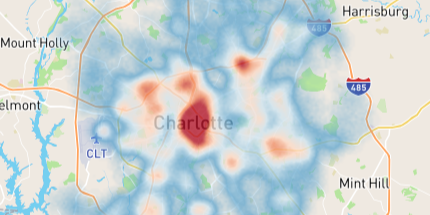
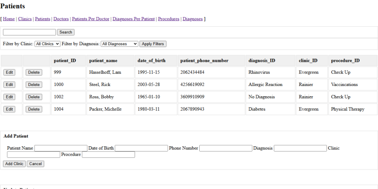
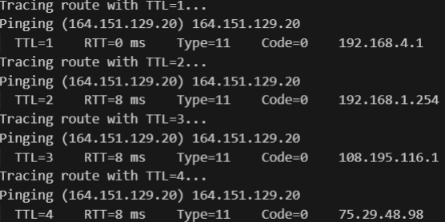
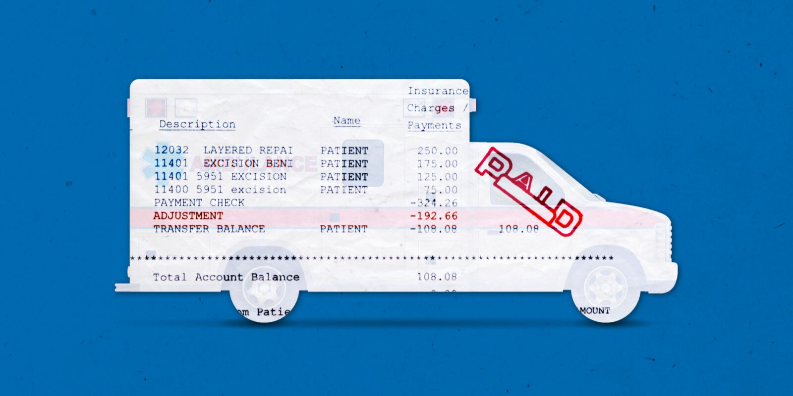

Real-Time EMS Call Prediction
This full-stack project forecasts 911 EMS calls with a Django + XGBoost backend and
K-Means clustering, generating daily predictions. React + Mapbox visuals provide
interactive heatmaps, while TDD ensures reliability and additional research explores
LSTM, Holt Winters, and more.
ICU Insulin Infusion Calculator
A Flask-based web app that automates ICU insulin infusion calculations. It references
standardized dose-adjustment tables based on the patient's current and previous blood
glucose levels, dynamically suggesting holds, rate increases, or boluses. The interface
streamlines critical care workflows by replacing manual lookups with reliable, real-time
guidance for nurses.
Automated ICD-10 Coding for EMR Data
This microservice automates ICD-10 coding for EMR systems to reduce manual entry. It
processes patient data, extracts chief complaints, and assigns ICD-10 codes using
RabbitMQ for efficient data exchange.

Patient Charting Database
This system digitizes patient charts, for record keeping. It reliably stores details,
diagnoses, and treatments in a normalized database to improve care.

Ping Trace
This project implements raw socket-based ICMP ping and traceroute functionality to
diagnose network paths. It sends echo requests with increasing TTL values, processes
responses from routers or the destination, and reports round-trip statistics and packet
loss.

Ambulance Billing Invoice Report Tool
This system automates billing report generation by integrating data from emergency
service platforms. It efficiently extracts, cleans, and merges trip details to enable
timely invoicing and prompt payments.